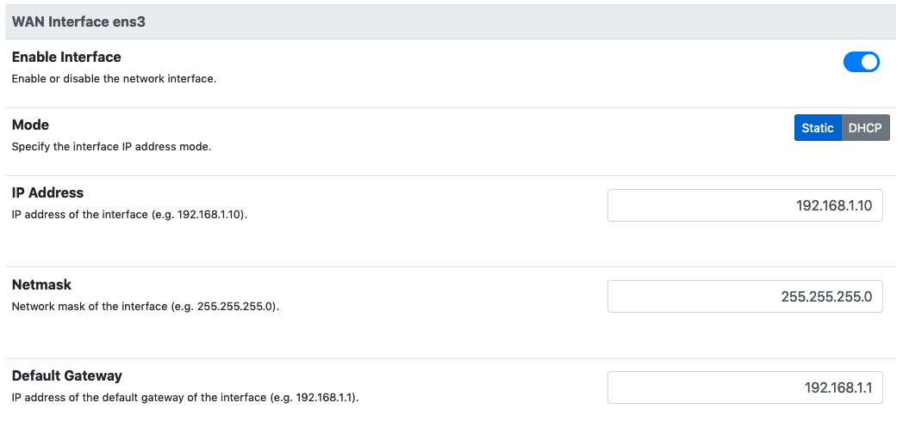
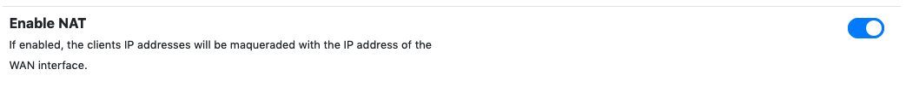
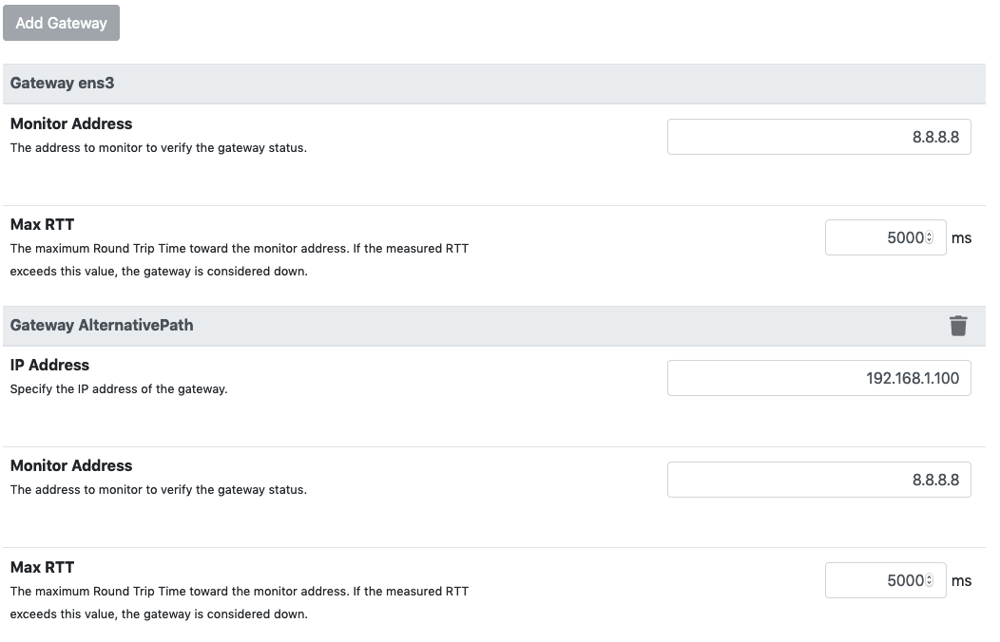
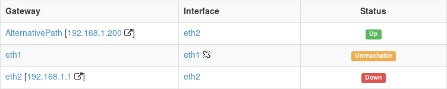
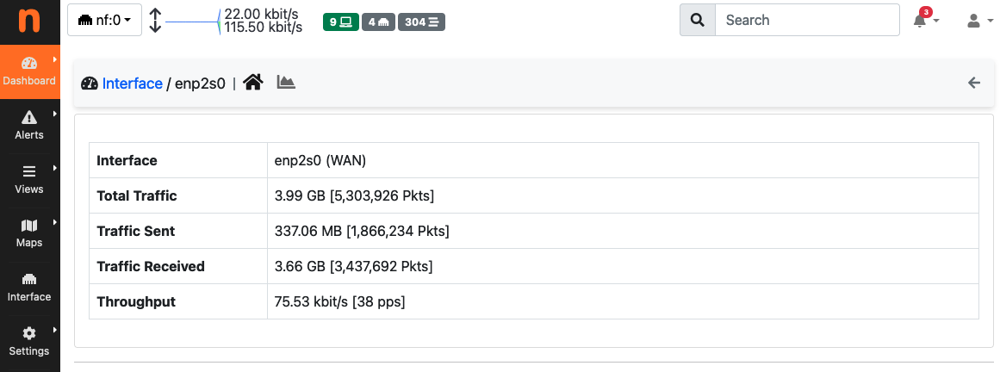
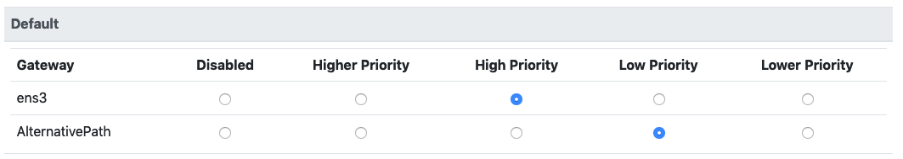
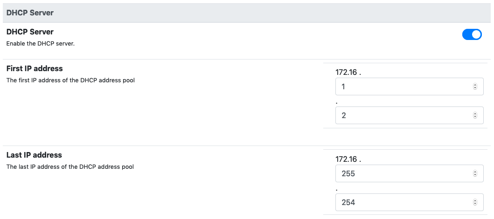
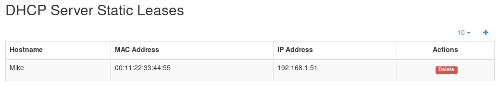
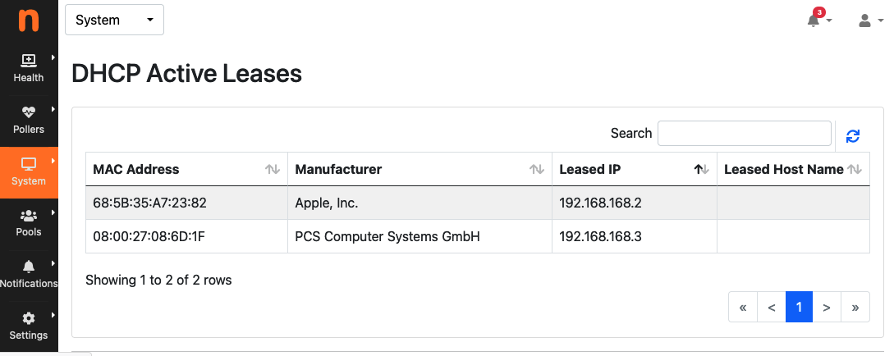

Router Mode
When running in router mode, nEdge will route the traffic from the LAN interface to one of the configured WAN interfaces. All the traffic going of a WAN interface will be NATed with the interface address.
An important note about routing mode is that, by default, it will block all the traffic. In order to actually enable traffic routing it is necessary to enable at least one gateway in the routing policies as explained below.
A WAN interface can be configured with a static address configuration or in DHCP client mode. A network interface can be selectively disabled to prevent any traffic to go through it.

WAN interface network configuration
NAT (Network Address Translation) is active by default on the WAN network interfaces. This means that the local IP address of the LAN clients are replaced with the WAN own interface address. When required, it is possible to disable NAT from the interface settings.

WAN interface NAT
nEdge implements dynamic multipath routing according to some user defined routing policies. Routing policies work with gateways, so let’s talk about gateway first.
Gateways
Before setting up the routing policies, gateways setup is needed. A gateway specifies the IP address to be used as the next hop for packet routing. A gateway also has a monitor address, which is the IP address to be used to verify if the gateway is currently up and running. nEdge will periodically send PING packets to this address through the gateway to verify if the gateway can correctly route the traffic.

Gateways configuration
For every configured WAN interface, a gateway is automatically created. This gateways is either bound to the manually specified WAN interface gateway, in case of static configuration, or to the gateway the WAN interface will acquire dynamically, if DHCP client mode is enabled for the interface.
Custom gateways can also be created at will. A typical example is the use of a single WAN port to route the traffic through different gateways. All the gateways and the nEdge WAN port itself are connected through a multiport switch. In this case, all the gateways must be on the same IP network in order for nEdge to correctly route the traffic through them.
The current gateway state can be checked from the Gateways and Users page.

Gateways status view
The table shows, for each gateway, what’s the network interface it will use to route the traffic along with its current status. A broken chain icon next to the interface name indicates that the interface link is currently down.
The gateway status can be one of the below:
Up: the gateway is currently up and it can correctly route the packets to the configured monitor address.
Down: the gateway is currently down or it cannot correctly route the packets to the configured monitor address.
Unreachable: there is currently no way for nEdge to reach the gateway IP address. This can be caused by an interface link down or by a misconfigured gateway/interface network. Usually a static IP has not been configured or the DHCP is not assigning an IP address.
Statistics for individual physical interfaces are available as well. To see them, click on the interface name from the above gateways status view. This opens a page with interface details.

Physical Interface Details
The page reports interface statistics calculated since the most recent reboot of nEdge. Among the statistic show there are bytes and packets transmitted and received, as well as the current throughput.
Physical interface statistics are also available as historical timeseries. To access these timeseries, click on the chart icon in the navbar.
Available timeseries are:
Traffic shown in both directions, i.e., sent (TX) and received (RX)
Traffic Total/Userspace to show the fraction of the total traffic that has been offloaded to the kernel.

Physical Interface Timeseries
Routing Policies
A routing policy is a set of rules which define gateways priorities. Routing policies must be associated to specific users through the Routing Policy option into the user configuration. The routing policy will be then applied to all the user devices. The Default routing policy is set by default on newly created users.

Routing policy configuration
By tweaking gateways priorities, it’s possible to effectively implement the load balancing and failover between multiple the gateways. In particular, when some gateways have the same priority the traffic will be load balanced between them. When one gateway has lower priority then another, the gateways will work in a failover fashion where the gateway with lower priority will be used only if the one with higher priority is not in an Up status. This is the case in the picture above, where the AlternativePath is in failover with the eth1 interface gateway.
It is important to note that load balancing cannot split the same flow between multiple gateways as it will actually break the flow.
nEdge periodically monitors gateways status, so that when a change in gateways status is detected it will dynamically update the gateway currently used by the clients to the gateway in Up status with the highest priority. nEdge will also adapt to cables plug/unplug events. When the WAN interfaces are configured in DHCP client mode, the cables can even be swapped and nEdge will automatically detect the new gateways setup.
Static Routes
Sometimes it may be necessary to add static routes to nEdge to properly handle users’ traffic.
Static routes, when defined, are applied to any of the nEdge routing policies and take precedence over any other gateway specified. That is, if there are a couple of gateways for a routing policy, namely SAT and WiFi, then the traffic will be matched against all the defined static routes (and possibly sent through the best match) before being sent through WiFi or SAT.
As an example, let’s consider the following scenario:
inet <-> gw (192.168.2.1) <-> (WAN 192.168.2.149) nEdge (LAN 192.168.1.1) <-> (192.168.1.2 LAN 10.100.200.0/24 with gw 192.168.1.1)
A ping packet originating at host 10.100.200.2 in the rightmost LAN, and destined to 8.8.8.8 will reach the nEdge but the reply won’t be able to reach the originating host as nEdge has no routing information to each 10.100.200.0/24. Therefore, one should add static route 10.100.200.0/24 via 192.168.1.2 to make sure the reply is able to reach the originating host.
DHCP Server
When routing mode is enabled, the DHCP server can be enabled or disabled at will on the configured LAN interface. Normally it should be enabled.

DHCP server configuration
A custom IP address range for the DHCP server can also be configured. Moreover, when the DHCP server is enabled, from the DHCP Leases page it’s possible to set static IP to MAC address mappings.

DHCP static leases configuration
To see all active DHCP leases, including the static ones, visit page “DHCP Active Leases” under System.

DHCP active leases
Port Forwarding
While operating in router mode, nEdge will mask the clients IP addresses with the IP address of the WAN interface which is being used to route the traffic (unless NAT is disabled). This means that a host connected on the WAN side of the network will not be able to reach the local clients connected to the LAN. In order to allow such communication, it is necessary to setup a Port Forwarding rule telling nEdge that all the incoming communications on a given TCP/UDP port should be mapped to an internal LAN IP and port. This can be configured from the “Port Forwarding” page under the cog menu icon.

Port Forwarding Rules
The above example shows two port forwarding rules currently active on interface eth1. An external host connecting to the eth1 public IP address on port 56123 would be able to reach the local client 192.168.1.5 ssh port 22.
By clicking the plus button it’s possible to define new rules.

Add Port Forwarding Rule
The external port can be either a single port number or a port range, for example 1000-1010. When a port range is used, all the external ports in that range will be mapped to a single internal port. The protocol specifies if the rule should map TCP ports, UDP ports, or both.